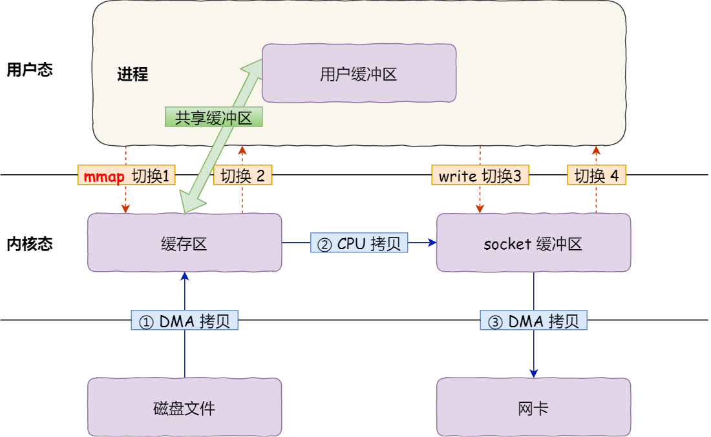
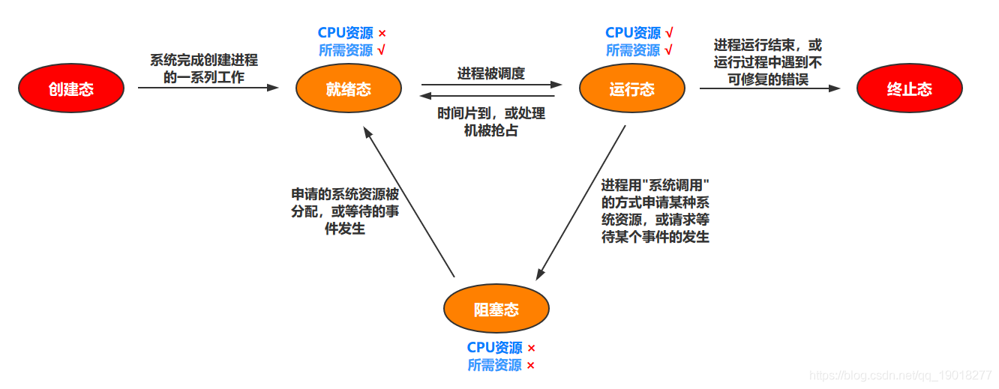

操作系统
操作系统是管理计算机硬件与软件资源的程序，本质上是运行在计算机上的软件程序 ，为用户提供一个与系统交互的操作界面 ，
分内核与外壳，外壳理解成围绕着内核的应用程序，而内核就是能操作硬件的程序。
32位系统进程可分配内存
创建一个进程时，操作系统会为该进程分配一个 4GB 大小的虚拟进程地址空间。
在 32 位的操作系统中，一个指针长度是 4 字节 ， 2的32次方个地址寻址能力是从 0x00000000~0xFFFFFFFF ，即为 4GB 。
32位64位操作系统的区别？
- 32位处理器一次只能处理32位，也就是4个字节的数据；而64位处理器一次就能处理64位，即8个字节的数据。
- 传统32位处理器的寻址空间最大为4GB，而64位的处理器在理论上则可以达到1800万TB。
- 最大内存容量、数据传输和处理速度、数值精度等指标也成倍增加，CPU的处理能力得到大幅提升
零拷贝
零拷贝
计算机执行操作时，CPU不需要先将数据从某处内存复制到另一个特定区域，通常用于通过网络传输文件时。
零拷贝并非真的是完全没有数据拷贝的过程，只不过是减少用户态和内核态的切换次数以及CPU拷贝的次数。
DMA拷贝
一块主板上独立的芯片，通过它来进行内存和IO设备的数据传输，从而减少CPU的等待时间。
传统IO
传统的IOread+write方式会产生2次DMA拷贝+2次CPU拷贝，4次上下文切换。

mmap + write
mmap+write方式则产生2次DMA拷贝+1次CPU拷贝，4次上下文切换，通过内存映射减少了一次CPU拷贝，可以减少内存使用，适合大文件的传输。

sendfile
sendfile方式是新增的一个系统调用函数，产生2次DMA拷贝+1次CPU拷贝，但是只有2次上下文切换。

sendfile+DMA gather
sendfile+DMA gather方式产生2次DMA拷贝，没有CPU拷贝，而且也只有2次上下文切换。依赖新的硬件设备支持。

PageCache有什么用
内核缓冲区，即磁盘高速缓存（PageCache）
- 通过 DMA 把磁盘里的数据搬运到内存里，这样就可以用读内存替换读磁盘。用 PageCache 来缓存最近被访问的数据。
针对大文件的传输，不应该使用 PageCache，也就是说不应该使用零拷贝技术，因为可能由于 PageCache 被大文件占据，而导致热点小文件无法利用到 PageCache，这样在高并发的环境下，会带来严重的性能问题。
大文件的传输
- 内核向磁盘发起读请求，但是可以不等待数据就位就可以返回，于是进程此时可以处理其他任务；
- 当内核将磁盘中的数据拷贝到进程缓冲区后，进程将接收到内核的通知，再去处理数据；
- 绕开 PageCache 的 I/O 叫直接 I/O，使用 PageCache 的 I/O 则叫缓存 I/O。通常，对于磁盘，异步 I/O 只支持直接 I/O
用户态内核态
内核态和用户态
为了限制不同程序的访问能力，划分了用户态和内核态两个权限等级。
- 用户态只能访问受限的资源，如果需要特殊权限，可以通过系统调用获取相应的资源；
- 内核态可以访问所有的 CPU 指令和所有的内存空间、I/O 空间和硬件设备。
所有用户程序都运行在用户态，一些内核态的操作需要进行系统调用，CPU切换到内核态，执行相应的服务，再切换为用户态并返回系统调用的结果。
为什么要有内核态和用户态
- 安全性：防止用户程序恶意或者不小心破坏系统/内存/硬件资源；
- 封装性：用户程序不需要实现更加底层的代码；
- 利于调度：便于操作系统统一调度。
什么时候进入内核态
用户态切换到内核态的3种方式
a. 系统调用
通过系统调用申请使用内核态服务程序完成工作，比如fork()，本质通过中断来实现。
b. 异常
用户态下的程序，发生了某些不可知的异常，会切换到处理此异常的内核程序，也就转到了内核态，比如缺页异常。
c. 外围设备的中断
当外围设备完成用户请求的操作后，会发出相应的中断信号，程序转而去执行中断处理程序。
内核态->用户态：执行一条特权指令，修改PSW的标志位为用户态
内核空间和用户空间
内核空间总是驻留在内存中，它是为操作系统的内核保留的。按访问权限可以分为
- 进程私有：每个进程都有单独的内核栈、页表、task 结构以及 mem_map 结构等。
- 进程共享：包括物理存储器、内核数据和内核代码区域。
用户进程都有一个单独的用户空间，处于用户态的进程不能访问内核空间中的数据，需要通过系统调用，切换到内核态。用户空间包括：
- 运行时栈：由编译器自动释放，存放函数的参数值，局部变量和方法返回值等。每当一个函数被调用时，该函数的返回类型和一些调用的信息被存储到栈顶，调用结束后调用信息会被弹出弹出并释放掉内存。栈区是从高地址位向低地址位增长的。
- 运行时堆：用于存放进程运行中被动态分配的内存段。由开发人员申请分配和释放。堆是从低地址位向高地址位增长，采用链式存储结构。
- 代码段：存放 CPU 可以执行的机器指令。通常代码区是共享的，即其它执行程序可调用它。
- 未初始化的数据段：存放未初始化的全局变量。
- 已初始化的数据段：存放已初始化的全局变量，包括静态全局变量、静态局部变量以及常量。
- 内存映射区域：例如将动态库，共享内存等虚拟空间的内存映射到物理空间的内存，一般是 mmap 函数所分配的虚拟内存空间。
系统调用
根据进程访问资源的特点，分为用户态和系统态。用户程序运行在用户态，通过系统调用使用系统态提供的功能。系统调用是操作系统对程序员提供的接口，应用程序通过系统调用来请求内核服务。
系统调用按功能分为：设备管理、文件管理、进程控制、进程通信、内存管理。
系统调用和中断的关系
系统调用：通过系统调用使用内核态的子功能。
中断：一个硬件或软件发出请求，要求CPU暂停当前工作，处理更加重要的事情。
都是CPU停止掉当前用户态上下文，保存工作现场，然后陷入到内核态继续工作。
区别是系统调用是切换到同进程的内核态上下文，而软中断是切换到了另外一个内核进程ksoftirqd上。
内存管理
内存管理主要是做什么
- 负责内存的分配与回收
- 地址转换，将逻辑地址转换成相应的物理地址
常见的内存管理机制
连续分配管理，如块式管理 。非连续分配管理如页式管理 、段式管理。
- 块式管理 ： 将内存分为几个固定大小的块，每个块中只包含一个进程。每个块中可能存在浪费。
- 页式管理 ：把主存分为大小相等且固定的一页一页的形式，页无实际意义，页较小，相对相比于块式管理的划分力度更大，提高了内存利用率，减少了碎片。通过页表对应逻辑地址和物理地址。
- 段式管理 ：把主存分为一段段的，每一段的空间又要比一页的空间小很多 。段有实际意义的，每个段定义了一组逻辑信息，例如，有主程序段 MAIN、子程序段 X、数据段 D 及栈段 S 等。 通过段表对应逻辑地址和物理地址。
- 段页式管理机制结合了段式管理和页式管理的优点。把主存先分成若干段，每个段又分成若干页。
请求分页存储管理
基本分页思想
- 我们将逻辑地址空间和内存地址空间划分为等大的页。每次调入调出都以页为单位，逻辑地址空间的某一个页经过页表转化到物理空间的某一页。运行某个程序时需一次性地调入程序所占用的所有页面
请求分页只修改了页面的调度：
运行某个程序时，需要哪一页调入哪一页（请求调页），由于内存大小有限，因此在调入新的一页时，可能空间不够，此时需要先选择一页调出（页面置换）
请求分页存储和基本分页存储的区别
- 请求分页是虚拟存储中的概念，基本分页是传统存储中的概念
- 请求分页在运行作业时不需要将全部的页面调入内存
- 请求分页有“请求调页”，“页面置换”，基本分页没有
请求分页存储虚实地址转换
- 程序请求访问某一页
- 判断页号是否大于页表寄存器中的页表长度，从而判断是否产生越界中断
- 索引快表，若快表命中
- 修改该页表项的访问位和修改位
- 根据快表形成物理地址
- 索引快表，若快表没有命中
- 索引慢表，若慢表命中: 页表项复制到快表中，修改访问位和修改位，形成物理地
- 索引慢表，若没有命中
说明该页还没有调入内存，产生缺页中断，请求外存调入页面。
1.产生缺页中断
2.从外存中找到该页面
3.检查内存是否已满，如果不满直接调入页面，如果内存已满需要根据页面置换算法选择一页换出后，再调入页面
4.调入后要修改页面，同时将页表项复制到快表中，从头开始继续访问快表
5.快表一定命中，成功得到物理地址
分页和分段区别？
- 共同点：
- 都是为了提高内存利用率，较少内存碎片。
- 页和段都是离散存储的，所以两者都是离散分配内存的方式。每个页和段中的内存是连续的。
- 都需要访问两次内存：第一次访问内存中的段表或者页表得到物理地址，第二次根据物理地址访问内存中的数据
- 区别：
- 页的大小是固定的，由操作系统决定；段的大小不固定，取决于我们当前运行的程序。
- 分页对用户不可见，完全由硬件决定，分段是用户可见的。（分页中是粗暴地将所有的程序划分成等大的页，程序员没办法决定，但是分段是按照程序员的编程逻辑来的，程序员可以决定）
- 分页仅仅是为了满足操作系统内存管理的需求，而段是逻辑信息的单位，在程序中可以体现为代码段，数据段，能够更好满足用户的需要。
地址转换最多/最少访问内存次数？
页式存储，2次：
第一次，访问内存中的页表，利用逻辑地址中的页号查找到页帧号，与逻辑地址中的页内偏移拼接形成物理地址；
第二次：得到物理地址后，再一次访问内存，存取指令或者数据。
段式存储，2次（同上）
段页式存储，3次：
第一次：访问内存中的段表查到页表的起始地址
第二次：访问内存中的页表找到页帧号，形成物理地址
第三次：得到物理地址后，再一次访问内存，存取指令或者数据
快表

TLB（translation lookaside buffer），旁路快表缓冲，页表缓冲。快表用来存放当前访问的若干页表项
当CPU收到应用程序发来的虚拟地址后，首先到TLB中查找相应的页表数据
若快表命中，则可直接得到页帧号，与页内偏移拼接成物理地址后访问内存，进行指令或者数据的存取。（只需访问一次内存）
若快表不命中，则需去内存中访问页表，形成物理地址后，再一次访问内存进行指令或者数据的存取。（需要访问两次内存）
内存分配方式一般有哪些
（1）静态：是在程序编译时就已经分配好的，在整个运行期间都存在，如全局变量、常量。
（2）栈式分配：由编译器自动分配释放 ，存放函数参数、局部变量等，函数执行结束后自动释放。
（3）堆式分配：一般由程序员分配释放，若程序员不释放，程序结束时可由 OS 自动回收。
内存碎片如何产生的？
- 内部碎片，当一个进程不能完全使用分给它的固定大小的内存区域时就产生了内部碎片，通常内部碎片难以完全避免；
- 外部碎片，未分配的连续内存区域太小，不能满足进程的内存分配请求。
普遍采用的段页式内存分配方式通过页表机制，使段内的页可以不必连续处于同一内存区域，从而减少了外部碎片，然而同一页内仍然可能存在少量的内部碎片，只是一页的内存空间本就较小，从而使可能存在的内部碎片也较少。
虚拟内存，常驻内存，共享内存
虚拟内存（VIRT）：进程“需要的”虚拟内存大小，包括进程使用的库、代码、数据，文件映射区以及堆空间和栈等
常驻内存（RES）：进程当前使用的内存大小，包括使用中的堆空间和分配的栈空间，包含其他进程的共享内存。（除去内核使用的部分，所有的进程都需要分配物理内存页给它们的代码、数据和堆栈。）
共享内存（SHARE）：进程会加载许多操作系统的动态库。这些库对于每个进程而言都是公用的，在内存中实际只会加载一份。
虚拟内存
什么是虚拟内存
- 每个程序都拥有自己的地址空间，这个地址空间被分成大小相等的页，这些页通过页表被映射到物理内存；
- 不需要所有的页都在物理内存中，当程序引用到不在物理内存中的页时，由操作系统将缺失的部分装入物理内存。
- 对于程序来说，逻辑上似乎有很大的内存空间，只是实际上有一部分是存储在磁盘上，因此叫做虚拟内存。
优点
- 地址空间：提供更大的地址空间，并且地址空间是连续的，使得程序编写、链接更加简单
- 进程隔离：不同进程的虚拟地址之间没有关系，所以一个进程的操作不会对其它进程造成影响
- 内存映射：有了虚拟内存之后，可以直接映射磁盘上的文件到虚拟地址空间。内存吃紧的时候又可以将这部分内存清空掉，提高物理内存利用效率。
访问物理内存
- 用户进程向操作系统发出内存申请请求
- 系统分配虚拟地址
- 系统为这块虚拟地址创建的内存映射，并将它放进该进程的页表
- 系统返回虚拟地址给用户进程，用户进程开始访问该虚拟地址
- CPU 根据虚拟地址在此进程的页表中找到了相应的内存映射，但是这个内存映射没有和物理内存关联，于是产生缺页中断
- 分配物理内存并将它关联到页表相应的内存映射。
缺页中断不是每次都会发生，只有系统觉得有必要延迟分配内存的时候才用的着
很多时候在上面的第 3 步，系统会分配真正的物理内存并和内存映射进行关联
局部性原理
- 时间局部性 ：如果程序中的某条指令一旦执行，不久以后该指令可能再次执行；如果某数据被访问过，不久以后该数据可能再次被访问。
- 空间局部性 ：一旦程序访问了某个存储单元，在不久之后，其附近的存储单元也将被访问
MMU作用
内存管理单元，负责虚拟地址映射为物理地址，以及提供硬件机制的内存访问授权。页表存储着页（逻辑地址）和页框（物理内存空间）的映射表。
- 操作系统在初始化或分配、释放内存时会执行一些指令在物理内存中填写页表，然后用指令设置MMU，告诉MMU页表在物理内存中的什么位置。
- 设置好之后，CPU每次执行访问内存的指令都会自动引发MMU做查表和地址转换操作，地址转换操作由硬件自动完成。
逻辑地址和物理地址
- 逻辑地址是相对地址，是在编译链接后指明的地址，编程一般只有可能和逻辑地址打交道。
- 物理地址是在内存中的实际地址，是装入后指明的位置
页面置换算法的作用?
当发生缺页中断时，如果当前内存中并没有空闲的页面，操作系统就必须在选择一个页面将其移出内存，为即将调入的页面让出空间。
常见的页面置换算法有哪些?
- FIFO （先进先出） : 置换在内存中驻留时间最长的页面。缺点：有可能将那些经常被访问的页面也被换出，从而使缺页率升高；
- LRU （最近未使用） ：置换出未使用时间最长的一页；实现方式：维护时间戳，或者维护一个所有页面的链表。当一个页面被访问时，将这个页面移到链表表头。这样就能保证链表表尾的页面是最近最久未访问的。
- 最不经常使用算法NFU：置换出访问次数最少的页面
缺页中断
概念
当一个程序访问一个映射到地址空间却实际并未加载到物理内存的页时， 硬件向软件发出的一次中断（或异常）就是一个缺页中断或叫页错误（page fault）。
缺页中断是一种特殊的中断，它与一般的中断的区别是：
（1）缺页中断是在指令执行期间，发现所要访问的指令或数据不在内存时产生和处理的。
（2）可能产生多次缺页中断。
Major/Minor page fault区别
发生缺页中断时，对应的数据还存在于磁盘上，即会触发一次major page fault；
发生缺页中断时，对应的数据已经载到了Page Cache中，这种异常即为一次minor page fault。
如何查看进程发生缺页中断的次数？
用ps -o majflt,minflt -C program命令查看
tcp服务器的系统发生大量缺页中断，可能的原因是什么
可能是mmap了大文件导致的，或者内存不够用了被频繁换入换出。
堆和栈的区别
申请方式
栈：由系统自动分配；
堆：程序员自己申请
申请效率的比较
栈：速度较快。
堆：一般速度比较慢，而且容易产生内存碎片。
- 堆和栈中的存储内容
栈：下一条指令的地址，函数的各个参数，函数中的局部变量。
堆：堆中的具体内容由程序员安排。
写时复制
写时复制指的是当多个进程共享同一块数据时，如果其中一个进程需要对这份数据进行修改，就需要将其拷贝到自己的进程地址空间中。这样做并不影响其他进程对这块数据的操作，每个进程要修改的时候才会进行拷贝，所以叫写时复制。
进程管理
进程实体的组成
- PCB：面向操作系统，是进程的唯一标识，进程创建时创建，进程结束时结束，包含进程标识符PID，用户标识符UID，进程优先级等
- 程序段：面向进程自己
- 数据段：面向进程自
进程线程区别
- 进程是操作系统分配资源的最小单元，线程是操作系统调度的最小单元。
- 不同进程有自己的独立地址空间，同一进程的线程共享所属进程的虚拟地址空间；
- 线程之间的通信更方便，同一进程下的线程共享全局变量等数据，而进程之间的通信需要以进程间通信的方式进行
- 一个程序至少有一个进程，一个进程至少有一个线程；
- 线程的上下文切换只需要保存线程的运行时数据，比如线程的id、寄存器中的值、栈数据。进程上下文要保存页表、文件描述符表、信号控制数据和进程信息、数据段、堆等数据。
- 多线程程序只要有一个线程崩溃，整个程序就崩溃了，但多进程程序中一个进程崩溃并不会对其它进程造成影响，因为进程有自己的独立地址空间，因此多进程更加健壮
为什么进程切换开销大
线程的上下文切换只需要保存线程的运行时数据，比如线程的id、寄存器中的值、栈数据。进程上下文要保存页表、文件描述符表、信号控制数据和进程信息、数据段、堆等数据。
上下文的切换会扰乱处理器的缓存机制。处理器中所有已经缓存的内存地址一瞬间都作废了。
当你改变虚拟内存空间的时候，处理的页表缓冲会被全部刷新，这将导致内存的访问在一段时间内相当的低效。但是在线程的切换中，不会出现这个问题。
进程间通信
进程拥有独立的内存地址空间，导致了进程之间无法利用直接的内存映射进行进程间通信。
1.信号
在软件层次上对中断机制的一种模拟。信号是异步的，一个进程不必通过任何操作来等待信号的到达。唯一的异步通信机制。
2.信号量
信号量也可以说是一个计数器，常用来处理进程或线程同步的问题，特别是对临界资源的访问同步问题。
临界资源：为某一时刻只能由一个进程或线程操作的资源，当信号量的值大于或等于0时，表示可以供并发进程访问的临界资源数，当小于0时，表示正在等待使用临界资源的进程数。
3.消息队列
消息队列是存放在内核中的消息链表，每个消息队列由消息队列标识符标识，与管道不同的是，消息队列存放在内核中，只有在内核重启时才能删除一个消息队列，内核重启也就是系统重启，同样消息队列的大小也是受限制的。
4.共享内存
共享内存就是分配一块能被其他进程访问的内存。共享内存是最快的IPC形式。
采用共享内存通信的一个显而易见的好处是效率高，因为进程可以直接读写内存，而不需要任何数据的拷贝。对于像管道和消息队列等通信方式，则需要在内核和用户空间进行四次的数据拷贝，而共享内存则只拷贝两次数据：一次从输入文件到共享内存区，另一次从共享内存区到输出文件。
不同进程间是如何实现共享内存的
- 在Linux中，每个进程都有属于自己的进程控制块（PCB）和地址空间，
- 都有一个与之对应的页表，负责将进程的虚拟地址与物理地址进行映射，
- 通过内存管理单元进行管理。两个不同的虚拟地址通过页表映射到物理空间的同一区域，它们所指向的这块区域即共享内存。
- 这样当一个进程进行写操作，另一个进程读操作就可以实现进程间通信。但是，我们要确保一个进程在写的时候不能被读，因此我们使用信号量来实现同步与互斥。
5.管道
半双工通信方式；只用于有亲缘关系（父子或兄弟进程）的进程间的通信；
管道通信怎么实现
管道是由内核管理的一个缓冲区，它被设计成为环形的数据结构，以便管道可以被循环利用。
- 管道的一端连接一个进程的输出。这个进程会向管道中放入信息。
- 管道的另一端连接一个进程的输入，这个进程取出被放入管道的信息。
- 当管道中没有信息的话，从管道中读取的进程会等待，直到另一端的进程放入信息。
- 当管道被放满信息的时候，尝试放入信息的进程会等待，直到另一端的进程取出信息。
- 当两个进程都终结的时候，管道也自动消失。
管道需要进入内核态吗？
每个进程各自有不同的地址空间，所以进程之间要交换数据必须通过内核，在内核中开辟一块缓冲区，进程A把数据从用户空间拷到内核缓冲区，进程B再从内核缓冲区把数据读走。
6.命名管道
命名管道是服务器进程和一个或多个客户进程之间通信的单向或双向管道。半双工。
不同于匿名管道的是：
命名管道可以在不相关的进程之间使用，服务器建立命名管道时给它指定一个名字，任何进程都可以通过该名字打开管道的另一端，根据给定的权限和服务器进程通信。
命名管道是个设备文件，存储在文件系统中，没有亲缘关系的进程也可以访问，但是它要按照先进先出的原则读取数据。
7.套接字
可用于不同主机间的进程通信。
线程间的通信
互斥量
- 只有拥有互斥对象的线程才能访问互斥资源。
- 因为互斥对象只有一个，所以可以保证互斥资源不会被多个线程同时访问；
- 当前拥有互斥对象的线程处理完任务后必须将互斥对象交出，以便其他线程访问该资源。
信号量
- 控制同一时刻访问此资源的最大线程数量。
- 信号量对象保存了最大资源计数和当前可用资源计数
- 每增加一个线程对共享资源的访问，当前可用资源计数就减1，只要当前可用资源计数大于0，就可以发出信号量信号，如果为0，则将线程放入一个队列中等待。线程处理完共享资源后，应在离开的同时通过
ReleaseSemaphore函数将当前可用资源数加1。 - 如果信号量的取值只能为0或1，那么信号量就成为了互斥量
事件
允许一个线程在处理完一个任务后，主动唤醒另外一个线程执行任务。
临界区和临界资源
临界资源
临界资源是一次仅允许一个进程使用的共享资源。各进程采取互斥的方式，实现共享的资源称作临界资源。
临界区
每个进程中访问临界资源的那段代码称为临界区，每次只允许一个进程进入临界区，进入后，不允许其他进程进入。
互斥量和临界区有什么区别？
1、临界区:通过对多线程的串行化来访问公共资源或一段代码，速度快，适合控制数据访问。
2、互斥量:为协调共同对一个共享资源的单独访问而设计的。
互斥量是可以命名的，可以用于不同进程之间的同步；而临界区只能用于同一进程中线程的同步。
创建互斥量需要的资源更多，因此临界区的优势是速度快，节省资源。
线程的共享资源和私有资源
线程共享包括：进程代码段、进程的公有数据（全局堆、全局变量，静态变量）、进程打开的文件描述符、信号处理器/信号处理函数、进程ID与进程组ID。
私有资源：线程上下文（所属线程的栈区、局部堆、程序计数器、错误返回码、信号屏蔽码）
为了保证对象的内存分配过程中的线程安全性，HotSpot虚拟机提供了一种叫做TLAB(Thread Local Allocation Buffer)的技术。
在线程初始化时，虚拟机会为每个线程分配一块TLAB空间，只给当前线程使用，当需要分配内存时，就在自己的空间上分配，这样就不存在竞争的情况，可以大大提升分配效率。
所以，“堆是线程共享的内存区域”这句话并不完全正确，因为TLAB是堆内存的一部分，他在读取上确实是线程共享的，但是在内存分配上，是线程独享的。
进程状态转换

线程有哪些状态
新建：新建线程对象，未调用 start 方法
可运行：调用 start 方法。等待获取 CPU 的使用权
运行中：线程获取了 CPU 的使用权，执行程序代码
阻塞：线程因为某种原因放弃了 CPU 的使用权，暂时停止运行
- 等待阻塞：当你调用了wait/join方法后，就会进入这个状态。一旦进入到这个状态，CPU就不会管你了，直到有别的线程通过notify方法将它唤起。
- 计时等待：使用Thread.sleep方法触发，触发后，线程就进入了Timed_waiting状态，随后会由计时器触发，再进入Runnable状态。
- 同步阻塞：当线程要进入临界区的时候，会发生
死亡：线程已经执行完毕。主线程 main 方法结束或因异常退出；子线程 run 方法结束或因异常退出
wait和block的区别？
wait的线程被唤醒后其实会进入block的状态去抢锁。
因为wait是在同步代码块中运行的，所以被唤醒后会要去抢锁，抢到锁才会进入就绪状态。
fork之后的父子进程同时读取一个文件？
fork之前open：由于父子进程是以共享的方式控制已经打开文件的，因此对文件的操作也是相互影响的，因此读写文件的位置也会发生相应的改变。
如果是非父子进程或者fork之后open，则会存在相互覆盖的情况
如果用O_APPEND标志打开一个文件，则相应标志也被设置到文件表项（file对象）的文件状态标志中。每次对这种具有填写标志的文件执行写操作时，每次写的数据都添加到文件的当前尾端处。
进程的调度算法
批处理系统
- 先到先服务（FCFS） : 按照请求的顺序进行调度。非抢占式，开销小，无饥饿问题，响应时间不确定；对短进程不利，对IO密集型进程不利。
- 短作业优先（SJF） : 按估计运行时间最短的顺序进行调度。非抢占式，开销可能较大，可能导致饥饿问题；对短进程提供好的响应时间，对长进程不利。
- 最短剩余时间优先 （SRTN）：按剩余运行时间的顺序进行调度，最短作业优先的抢占式版本。吞吐量高，开销可能较大，提供好的响应时间；可能导致饥饿问题，对长进程不利。
- 最高响应比优先：响应比 = 1+ 等待时间/处理时间。同时考虑了等待时间的长短和估计需要的执行时间长短，很好的平衡了长短进程。非抢占，吞吐量高，开销可能较大，提供好的响应时间，无饥饿问题。
交互式系统
交互式系统有大量的用户交互操作，在该系统中调度算法的目标是快速地进行响应。
时间片轮转调度算法 ：将所有就绪进程按 FCFS 的原则排成一个队列，用完时间片的进程排到队列最后。抢占式（时间片用完时），开销小，无饥饿问题，为短进程提供好的响应时间；
若时间片小，进程切换频繁，吞吐量低；若时间片太长，实时性得不到保证。
优先级调度 ： 为每个进程分配一个优先级，按优先级进行调度。为了防止低优先级的进程永远等不到调度，可以随着时间的推移增加等待进程的优先级。
多级反馈队列调度算法 ：设置多个就绪队列1、2、3…，优先级递减，时间片递增。只有等到优先级更高的队列为空时才会调度当前队列中的进程。如果进程用完了当前队列的时间片但还未执行完，则会被移到下一队列。抢占式（时间片用完时），开销可能较大，对IO型进程有利，可能会出现饥饿问题
抢占式非抢占式的区别
- 抢占式：即当进程位于内核空间时，有一个更高优先级的任务出现时，如果当前内核允许抢占，执行优先级更高的进程。
- 非抢占式：高优先级的进程不能中止正在内核中运行的低优先级的进程而抢占CPU运行。
- 低优先级的进程必须等待很长时间，并且可能会在抢占式调度中饿死。
- 抢占式有进程调度的开销，非抢占式没有
程序计数器的作用
为了保证进程能执行下去，需要确定下一条指令的地址。
- 在程序开始执行前，必须将它的起始地址，即程序的第一条指令所在的内存单元地址送入程序计数器。
- 当执行指令时， 处理器将自动修改程序计数器的内容，即每执行一条指令程序计数器增加一个量，以便保持的总是将要执行的下一条指令的地址。
并发、并行、异步的区别？
并发：在一个时间段中同时有多个程序在运行，但其实任一时刻，只有一个程序在CPU上运行；
并行：在多CPU系统中，多个程序同时执行的
异步：同步是顺序执行，异步是在等待某个资源的时候继续做自己的事
可以用kill -9 关闭进程吗
kill可将指定的信息送至程序。预设的信息为SIGTERM(15)，可将指定程序终止。若仍无法终止该程序，可使用SIGKILL(9)信息尝试强制删除程序。
- 由于kill -9 属于暴力删除，相当于突然断电。
- 迫使进程在运行时突然终止，进程在结束后不能自我清理。危害是导致系统资源无法正常释放，一般不推荐使用，除非其他办法都无效。
kill是靠什么来通信的
信号。
- ctrl + c，会发送
SIGINT的信号，等同于kill -2(interrupt) - ctrl + z，会发送
SIGTSTP的信号
fork函数的底层实现原理
1、分配新的内存块和内核数据结构给子进程
2、将父进程部分数据结构内容拷贝至子进程：进程pcb、 程序体，即代码段数据段等、用户栈、内核栈虚拟内存池、页表。当父子进程有一个想要修改数据或者堆栈时，两个进程真正分裂。
3、添加子进程到系统进程列表当中
4、fork返回，开始调度器调度
什么是僵尸进程？大量的僵尸进程如何处理
定义
父进程使用 fork 创建子进程，如果子进程退出，而父进程并没有调用 wait 或 waitpid 获取子进程的状态信息，那么子进程的进程描述符仍然保存在系统中。这种进程称之为僵尸进程。
危害
保留的进程信息就不会释放，其进程号就会一直被占用，但是系统所能使用的进程号是有限的，如果大量的产生僵死进程，将因为没有可用的进程号而导致系统不能产生新的进程。此即为僵尸进程的危害，应当避免。
处理
父进程kill。僵尸进程变成孤儿进程，进而被 init 进程接管，init 进程会 wait()这些孤儿进程，释放它们占用的系统进程表中的资源。
死锁
在两个或者多个并发进程中，每个进程持有某种资源而又等待其它进程释放它们现在保持着的资源，在未改变这种状态之前都不能向前推进，称这一组进程产生了死锁
必要条件
- 互斥：同一时刻，一个资源只能被一个进程使用；
- 占有并等待：已经占有了某个资源的进程可以再请求并等待新的资源。
- 非抢占：已经分配给一个进程的资源不能被强制性抢占，只能由占有进程自愿释放；
- 循环等待：若干进程之间形成一种环形等待资源关系，该环路中的每个进程都在等待下一个进程所占有的资源。
避免死锁
引入银行家算法
当进程提出资源分配请求时，OS先判断满足本次请求会不会导致系统不安全状态。如果是，拒绝分配资源并阻塞进程；否则分配资源。
安全状态
如果OS能够找到某种进程顺序，使得给每个进程分配所有需要的资源后，能够依次顺利执行结束并释放资源，那么称为系统处在安全状态；否则称为系统处在不安全状态。
死锁解除
- 利用回滚：让某些进程回退到足以解除死锁的地步，进程回退时自愿释放资源。（要求系统保持进程的历史信息，设置还原点）；
- 利用杀死进程：强制杀死某些进程直到死锁解除为止，可以按照优先级进行。
中断发生了什么
- 执行完每个指令后，CPU都要检查当前是否有外部中断信号。
- 如果检测到外部中断信号，则需要保护被中断进程的CPU环境（如程序状态字PSW、程序计数器、各种通用寄存器）。
- 根据中断信号类型转入相应的中断处理程序。
- 恢复进程的CPU环境并退出中断，返回原进程继续往下执行。
(1) 中断是为了实现多道程序并发执行而引入的一种技术。
(2) 中断的本质就是发生中断时需要操作系统介入开展管理工作。
(3) 发生CPU会立即进入核心态，针对不同的中断信号，采取不同的处理方式。
(4) 中断是CPU从用户态进入核心态的唯一途径。
进程的异常控制流：陷阱、中断、异常和信号
陷阱是有意造成的“异常”，是执行一条指令的结果。陷阱的主要作用是实现系统调用。
中断由处理器外部的硬件产生，不是执行某条指令的结果，也无法预测发生时机。由于中断独立于当前执行的程序，因此中断是异步事件。
异常是一种错误情况，是执行当前指令的结果，可能被错误处理程序修正，也可能直接终止应用程序。
信号是一种更高层的软件形式的异常，用来通知进程发生了某种系统事件。
文件系统
文件描述符
文件描述符是内核为了高效管理已被打开的文件所创建的索引，用于指代被打开的文件，对文件所有 I/O 操作相关的系统调用都需要通过文件描述符。
软链接和硬链接？
硬链接：
本质上和源文件没什么不同，和源文件共享同一个inode节点，通过这个inode节点来访问文件数据。
文件系统会维护一个引用计数，只要有文件指向这个区块，它就不会从硬盘上消失。只有当最后一个连接被删除后，文件的数据块及目录的连接才会被释放。
创建方法：ln [源文件] [链接文件.hard]
软链接（符号链接）：
类似windows的快捷方式，给文件创建一个快速的访问路径，它依赖于原文件。当原文件出现问题后，该链接不可用。
创建方法：ln -s [源文件] [链接文件.soft]
区别
删除源文件后硬链接还可以访问源文件数据，软链接失效。
原因：硬链接与源文件共用同一个inode，删除源文件后只是减少了inode的一个链接数，硬链接文件还可以继续访问源文件数据。而软链接是通过源文件路径来访问数据，但是源文件已经删除，所以路径访问不到，无法获取源文件数据。
删除一个文件，文件并不会立即删除，而是先删除了目录项中的文件名信息，并使inode的链接数减一，只有链接数为0时文件才会删除
多路复用
IO多路复用（IO Multiplexing）是指单个进程/线程就可以同时处理多个IO请求。
实现原理：用户将想要监视的文件描述符添加到select/poll/epoll函数中，由内核监视，函数阻塞。一旦有文件描述符就绪（读就绪或写就绪），或者超时（设置timeout），函数就会返回，然后该进程可以进行相应的读/写操作。
select
- 由于 Socket 是文件描述符，因而某个线程盯的所有的 Socket，都放在一个文件描述符集合 fd_set 中，然后调用 select 函数来监听文件描述符集合是否有变化。
- 一旦有变化，就会依次查看每个文件描述符。那些发生变化的文件描述符在 fd_set 对应的位都设为 1，表示 Socket 可读或者可写，从而可以进行读写操作，然后再调用 select，接着盯着下一轮的变化。
- 因为每次 Socket 所在的文件描述符集合中有 Socket 发生变化的时候，都需要通过轮询的方式。因而使用 select，能够同时盯的项目数量由 FD_SETSIZE 限制
epoll
epoll的使用过程:
- 调用
epoll_create()函数创建一个epoll句柄 - 调用
epoll_ctl()函数将监控的文件描述符进行处理 - 调用
epoll_wait()函数,等待就绪的文件描述
它在内核中的实现不是通过轮询的方式，而是通过注册 callback 函数的方式，当某个文件描述符发送变化的时候，就会主动通知。
- epoll_create 创建一个 epoll 对象，也是一个文件，也对应一个文件描述符，同样也对应着打开文件列表中的一项。在这项里面有一个红黑树，在红黑树里，要保存这个 epoll要监听的所有 Socket
- 当 epoll_ctl 添加一个 Socket 的时候，其实是加入这个红黑树，同时红黑树里面的节点指向一个结构，将这个结构挂在被监听的 Socket 的事件列表中。当一个 Socket 来了一个事件的时候，可以从这个列表中得到 epoll 对象，并调用 call back 通知它。
使用场景
高并发
优点
- 文件描述符的个数无上限（只要内存足够大）。将新的文件描述符通过epoll_ctl添加到红黑树中，由红黑树这个数据结构来管理所有需要监视的文件描述符.
- 通知文件描述符已经就绪的方式：每一个文件描述符都会与网卡绑定，当文件描述符就绪时，就会触发网卡去将对应的就绪的文件描述符回调，然后将其添加到队列（双向列表）之中
- 维护就绪队列：当调用函数
epoll_wait()函数时，若该队列之中有元素就会被取走，这样的操作时间复杂度是O(1);
select/poll/epoll三者的区别？
select：将文件描述符放入一个集合中，调用select时，将这个集合从用户空间拷贝到内核空间（缺点1：每次都要复制，开销大），由内核根据就绪状态修改该集合的内容。（缺点2）集合大小有限制，32位机默认是1024（64位：2048）；采用水平触发机制。select函数返回后，需要通过遍历这个集合，找到就绪的文件描述符（缺点3：轮询的方式效率较低），当文件描述符的数量增加时，效率会线性下降；poll：和select几乎没有区别，区别在于文件描述符的存储方式不同，poll采用链表的方式存储，没有最大存储数量的限制；epoll：通过内核和用户空间共享内存，避免了不断复制的问题；支持的同时连接数上限很高；文件描述符就绪时，采用回调机制，避免了轮询；支持水平触发和边缘触发，采用边缘触发机制时，只有活跃的描述符才会触发回调函数。
总结，区别主要在于：
- 一个线程/进程所能打开的最大连接数
- 文件描述符传递方式（是否复制）
- 水平触发 or 边缘触发
- 查询就绪的描述符时的效率（是否轮询）
什么时候使用select/poll/epoll？
当连接数较多并且有很多的不活跃连接时，epoll的效率比其它两者高很多；
但是当连接数较少并且都十分活跃的情况下，由于epoll需要很多回调，因此性能可能低于其它两者。
水平、边缘触发
水平触发（lt）
只要一个文件描述符就绪，就会触发通知，如果用户程序没有一次性把数据读写完，下次还会通知。
select，poll就属于水平触发。
边缘触发（et）
当描述符从未就绪变为就绪时通知一次，之后不会再通知，直到再次从未就绪变为就绪（缓冲区从不可读/写变为可读/写）
epoll支持水平触发和边缘触发。
区别
边缘触发效率更高，减少了被重复触发的次数，函数不会返回大量用户程序可能不需要的文件描述符。
常见IO模型
- 同步阻塞IO（Blocking IO）：用户线程发起IO读/写操作之后，线程阻塞，直到可以开始处理数据；对CPU资源的利用率不够；
- 同步非阻塞IO（Non-blocking IO）：发起IO请求之后可以立即返回，如果没有就绪的数据，需要不断地发起IO请求直到数据就绪；不断重复请求消耗了大量的CPU资源；
- IO多路复用：是指单个进程/线程就可以同时处理多个IO请求。
- 异步IO（Asynchronous IO）：用户线程发出IO请求之后，继续执行，由内核进行数据的读取并放在用户指定的缓冲区内，在IO完成之后通知用户线程直接使用。